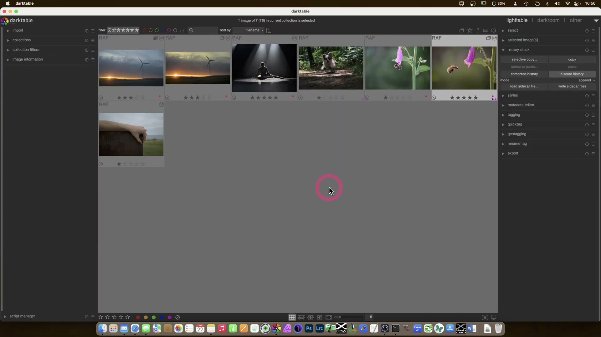

Color Grading¶
Dopo il tone mapping, i colori appaiono spesso un po' spenti. E' normale: il tone mapper comprime la gamma dinamica, e con essa la saturazione percepita. Questa fase restituisce vita cromatica all'immagine.
Color Balance RGB¶
Il modulo Color Balance RGB e' lo strumento di riferimento per la gradazione cromatica. Implementa gli standard ASC CDL del cinema digitale e permette di regolare vividezza, saturazione e brillantezza in modo selettivo per ombre, toni medi e alte luci.1
Panoramica¶
Il modulo opera dopo la calibrazione colore e prima di filmic rgb, ed è posizionato nel pixelpipe in uno spazio Lab convertito temporaneamente in ProPhoto RGB lineare per garantire coerenza fisica delle operazioni1. A differenza del vecchio modulo color balance, color balance rgb non converte mai in Lab durante l’elaborazione: le correzioni avvengono esclusivamente nello spazio ProPhoto RGB lineare, preservando la linearità della pipeline scene-referred14.
Flusso di lavoro¶
- Calibrazione prima di tutto: applicare sempre input color profile, camerasensor, white balance, e base curve prima di qualsiasi intervento su color balance rgb7.
- Ordine operativo consigliato: impostare prima i parametri slope, poi offset, infine power, seguendo la sequenza mnemonica del modello ASC CDL1. Questo ordine minimizza le interazioni indesiderate tra i parametri.
- Maschere obbligatorie per precisione: per look creativi (es. teal & orange), usare due istanze distinte di color balance rgb, una mascherata su pelle e l’altra su sfondo, come suggerito nei preset ufficiali1.
Parametri dettagliati¶
| Parametro | Range | Default | Descrizione |
|---|---|---|---|
| Mode | slope, offset, power (ProPhoto RGB) (consigliato) / lift, gamma, gain (sRGB) |
slope, offset, power (ProPhoto RGB) |
Il primo è il modello ASC CDL, ottimizzato per workflow scene-referred; il secondo è legacy e agisce in sRGB non lineare1. |
| Shadows (offset) | -0.50 a +0.50 (valori oltre via input testuale) |
0.00 |
Corregge il livello nero; ha impatto maggiore sulle ombre in slope, offset, power. In lift, gamma, gain, equivale al lift. Attenzione: passando da slope, offset, power a lift, gamma, gain, la saturazione ombra va ridotta di ~10× per evitare sovraccarico1. |
| Mid-tones (power) | -0.50 a +0.50 |
0.00 |
Equivale alla correzione gamma; influenza principalmente i toni medi. Valori positivi aumentano contrasto nei medi, negativi lo riducono. |
| Highlights (slope) | -0.50 a +0.50 |
0.00 |
Funziona come esposizione relativa: valori > 0.00 schiariscono le alte luci, < 0.00 le scuriscono. Ha impatto dominante sulle luci1. |
| Saturation (master) | 0% a 200% (input testuale oltre) |
100% |
Saturazione globale post-correzione. Utile per bilanciare effetti creativi senza alterare i rapporti RGB. |
| Contrast | -50% a +50% |
0% |
Modifica la separazione luminosa su tutti i canali RGB. Non conserva i rapporti cromatici in valori estremi (> ±30%). |
| Contrast fulcrum | 0.00 a 1.00 (0 = nero, 1 = bianco) |
0.50 |
Punto di riferimento intorno al quale il contrasto si applica. Un fulcrum a 0.30 accentua ombre, a 0.70 privilegia luci1. |
Procedura operativa¶
- Inizia dalla vibrance globale: un aumento di +15/+25% ridona vita ai colori senza saturare eccessivamente i toni pelle
- Regola il contrasto globale se serve (+5/+10% e' spesso sufficiente)
- Per un look cinematografico, usa i cursori per zona: toni caldi nelle ombre (verso arancione) e toni freddi nelle alte luci (verso blu)
Aggiungere sempre dopo la calibrazione
Aggiungere sempre color balance rgb e basic colorfulness dopo la calibrazione colore.7
Esempio: look «teal & orange»¶
Il look teal & orange e' popolarissimo nel cinema:
- Nel Color Balance RGB, pannello 4-way, sposta le ombre verso il blu-ciano
→ Imposta Shadows offset:R: -0.18,G: -0.12,B: +0.25 - Sposta le alte luci verso l'arancione-giallo
→ Imposta Highlights slope:R: +0.22,G: +0.14,B: -0.08 - Lascia i toni medi neutri o leggermente verso il giallo
→ Imposta Mid-tones power:R: +0.05,G: +0.07,B: -0.03 - Aumenta la vibrance a +20/+30%
Selettore complementare (dt 5.2+)
Nel modulo RGB Color, premere ++ctrl++ usando la pipetta nel tab Four Ways per selezionare automaticamente il colore complementare per neutralizzare le dominanti.9
Consigli avanzati¶
Duplicare per preservare
Duplicare il modulo Color Balance RGB prima del color grading creativo per preservare le regolazioni della scheda principale intatte.10
Nuovo metodo di neutralizzazione (dt 5.4)
In darktable 5.4+, il pulsante neutralize colors supporta ora il campionamento multi-patch con feedback visivo in tempo reale: clicca su tre aree distinte (ombra, medio, luce) tenendo premuto ++shift++, quindi conferma con ++enter++. Il sistema calcola automaticamente i valori ASC CDL ottimali per ogni zona8.
Color Equalizer¶
Il Color Equalizer (Equalizzatore colore) permette di agire selettivamente su specifiche tonalita' cromatiche, modificando saturazione, luminosita' e tinta per ciascun range di colori.
Panoramica¶
Opera in spazio CIE LCh (Luminanza-Chroma-Hue), uno spazio percettivamente uniforme che garantisce che variazioni uguali nei parametri producano variazioni visive simili all’occhio umano2. Ogni banda di colore è definita da un intervallo di hue (da 0° a 360°) e da una larghezza di banda (bandwidth) misurata in gradi.
Flusso di lavoro¶
- Attiva il modulo e scegli la modalità HSL (più intuitiva) o RGB (per controllo preciso).
- Usa i cursori numerici per impostare hue centrale e bandwidth con precisione decimale (es.
hue = 215.3°,bandwidth = 24.0°). - Regola saturation (
-100%a+100%) e lightness (-100%a+100%) per ogni banda.
Parametri chiave¶
| Parametro | Range | Default | Note |
|---|---|---|---|
| Hue center | 0.0°–360.0° |
0.0° (rosso) |
Valori tipici: 215° (blu-ciano), 30° (arancione), 120° (verde) |
| Bandwidth | 1.0°–90.0° |
30.0° |
Una bandwidth di 12.0° seleziona una tonalità molto stretta (es. solo cielo blu); 45.0° copre un arco ampio (es. tutti i verdi). |
| Saturation | -100% a +100% |
0% |
Valori positivi aumentano vividezza, negativi la riducono. Evitare > +60% su pelle per evitare artefatti. |
| Lightness | -100% a +100% |
0% |
Utile per schiarire ombre blu senza toccare la saturazione (es. lightness = +15% su hue = 215°). |
Sensibilita' delle regolazioni
Se la regolazione del Color Equalizer e' troppo sensibile, applicare una maschera di fusione globale e usare il cursore di opacita' per controllare gradualmente l'effetto.10
Cursori numerici
Nel Color Equalizer, usare i cursori numerici invece di trascinare i nodi per un controllo preciso della tonalita'.11
Il modulo opera in spazi colore percettivamente uniformi, permettendo regolazioni che rispettano la percezione umana dei colori piuttosto che i valori numerici grezzi.2
Tone Equalizer: scultura della luce¶
Il Tone Equalizer opera nel dominio lineare utilizzando una maschera guidata che divide l'immagine in zone di luminanza. Il suo cuore e' il filtro EIGF (Exposure-Independent Guided Filter).3
Panoramica¶
A differenza di tone curve, che modifica la curva globale di luminanza, tone equalizer agisce localmente su bande di luminanza definite da una maschera basata sull’istogramma dell’immagine. La maschera è adattiva: viene calcolata in tempo reale e suddivide l’immagine in 7 zone di luminanza (da 0.0 a 1.0) con transizioni morbide3.
Flusso di lavoro interattivo¶
- Attiva il modulo e vai nel tab «Avanzato»
- Porta il cursore del mouse sull'immagine, sopra un'area troppo scura
- Scorri la rotella del mouse verso l'alto per schiarire, verso il basso per scurire
- La curva nel modulo si aggiorna automaticamente
- Ripeti su aree troppo luminose (es. cielo)
Non toccare i singoli slider
Usa sempre l'interazione diretta con il mouse sull'immagine. E' piu' veloce, piu' intuitivo, e produce risultati migliori.3
Clicca prima sull'intestazione
Fare clic sull'intestazione del modulo prima di zoomare quando si usa il Tone Equalizer per evitare la modifica accidentale dell'esposizione.10
Gestire la maschera¶
Con immagini ad altissima gamma dinamica, il Tone Equalizer potrebbe non riuscire ad «afferrare» le zone estreme:
- Vai nel tab «Masking»
- Clicca sulle bacchette magiche accanto a «Mask exposure compensation» e «Mask contrast compensation»
- Questo ricentra e adatta l'istogramma della maschera
Novita' darktable 5.4
La compensazione maschera esposizione/contrasto e' ora direttamente accessibile dalla schermata principale. Clic destro sui cursori tonali per la nuova ruota tinta visuale (hue wheel).8
Effetto troppo intenso?
Ridurre l'opacita' invece di modificare drasticamente la curva (che tende ad appiattire il risultato). Curva con pendenza verso il basso = piu' contrasto; verso l'alto = meno contrasto.11
Equalizzatore di Contrasto¶
Per i dettagli piu' fini, l'equalizzatore di contrasto scompone l'immagine in diverse scale di wavelet.4
Panoramica¶
Implementa un algoritmo non-lineare di decomposizione wavelet a 8 scale (da 0 a 7). Le scale 0–2 corrispondono ai dettagli fini (grana, texture pelle), 3–5 ai dettagli medi (contorni, strutture), 6–7 alle grandi forme (contorni generali, transizioni tonali)4.
Flusso di lavoro¶
- Nella curva di luminosita', alza le scale fini (a sinistra) di circa
+0.3–+0.5 - Lascia invariate le scale grandi (a destra)
- Controlla al 100%
Preferire al sharpening standard
L'equalizzatore di contrasto produce risultati piu' naturali dello sharpening standard (evita l'aspetto artificiale e duro). Ridurre lo zoom dell'anteprima quando si regola il contrasto per valutare l'impatto complessivo.7
Diffuse or Sharpen¶
Il modulo Diffuse or Sharpen, basato su modelli fisici di diffusione, offre preset integrati:5
| Preset | Uso | Parametri tipici |
|---|---|---|
| Sharpen sensor demosaicing | Nitidezza base, da applicare sempre | strength = 0.25, radius = 1.0, masking = 0.3 |
| Lens deblur | Recupero fuoco leggermente morbido | strength = 0.40, radius = 2.5, iterations = 3 |
| Local contrast | Contrasto locale fisico | strength = 0.35, radius = 15.0, masking = 0.2 |
| Dehaze | Rimozione foschia | strength = 0.60, radius = 50.0, contrast = 0.45 |
| Bloom | Bagliore morbido sulle alte luci | strength = 0.18, radius = 80.0, softness = 0.7 |
Risorse computazionali
Diffuse or Sharpen e' estremamente esigente. Su un MacBook Pro M3, una singola istanza richiede diversi secondi per il rendering. Usarlo con parsimonia.5
Dehaze al posto del high-pass
Usare l'opzione de-haze in Diffuse or Sharpen invece del tradizionale filtro high-pass. Offre nitidezza piu' pulita, evita bordi neri indesiderati.12
Alternativa veloce
Il modulo Local Contrast e' piu' veloce di Diffuse or Sharpen, anche se piu' sottile -- preferirlo nel workflow lowlight.10
LUT 3D: integrazione professionale¶
Il modulo LUT 3D permette di applicare trasformazioni cromatiche predefinite tramite file .cube, .3dl, .png (HaldCLUT) o .gmz (libreria compressa GMIC)6.
Panoramica¶
È progettato per workflow professionali di simulazione pellicola e color grading cinematografico. A differenza dei moduli parametrici, LUT 3D opera su una griglia tridimensionale di punti RGB, garantendo una mappatura precisa e coerente di ogni possibile combinazione di ingresso6.
Flusso di lavoro¶
- Configura la cartella radice LUT in Preferences > Processing > 3D LUT root folder.
- Seleziona un file
.cubecompatibile con lo spazio colore Rec. 709 o sRGB, a seconda del target di destinazione6. - Imposta application color space in base al LUT caricato (es.
Rec. 709per LUT da DaVinci Resolve). - Usa interpolation = tetrahedral (default, migliore qualità) o
trilinearper prestazioni più elevate.
Compatibilità critica
I LUT scaricati da internet non sono sempre compatibili con darktable: molti assumono spazi colore non lineari o profili di input specifici. Testa sempre un LUT su un’immagine neutra prima di usarlo in produzione6.
Workflow film simulation
Per simulazioni pellicola realistiche, applicare LUT 3D dopo filmic rgb, ma prima di color balance rgb, in modo che il LUT lavori su un’immagine già compressa dinamicamente ma ancora priva di correzioni creative6.
Basic Color Curves: approccio fondamentale¶
Il modulo Basic Color Curves, pur non essendo citato esplicitamente nella pagina attuale, è un blocco fondamentale per il color grading fine-tuned. Opera in spazio RGB lineare e fornisce curve separate per Red, Green, Blue, oltre alla curva Value (luminanza)13.
Panoramica¶
Basato sul principio che ogni pixel è una combinazione di tre valori (0–255 per canale in 8-bit), il modulo permette di manipolare la relazione tra input e output per ciascun canale. Una curva “S” su Value aumenta il contrasto globale, mentre curve asimmetriche su Red e Blue generano effetti di toning (es. arancione in luci, blu in ombre)13.
Esempio pratico: Teal & Orange con curve¶
Per replicare il look senza color balance rgb, usa Basic Color Curves:
- Curva Value: forma una leggera “S” (
input 0.2 → output 0.15,input 0.5 → output 0.5,input 0.8 → output 0.85) - Curva Red: alza la parte destra (luci) di
+0.12, abbassa la sinistra (ombre) di-0.05 - Curva Green: alza la parte destra di
+0.08, abbassa la sinistra di-0.03 - Curva Blue: abbassa la parte destra di
-0.10, alza la sinistra di+0.18
→ Risultato: luci tendenti all’arancione (R↑ + G↑ + B↓), ombre al teal (R↓ + G↓ + B↑)13.

Risorse avanzate¶
- PIXLS.US – Basic Color Curves: guida concettuale sulla teoria delle curve RGB e sul loro impatto psicologico13.
- darktable 4.8 Manual – Color Balance: documentazione tecnica completa sul modello ASC CDL e sulle differenze tra
slope, offset, powerelift, gamma, gain1. - darktable 5.4 Release Notes: dettagli sulle nuove funzionalità di neutralizzazione multi-patch e ruota tinta visuale8.
Fonti¶
-
darktable 4.8 user manual – color balance, docs.darktable.org ↩↩↩↩↩↩↩↩↩
-
darktable User Manual -- Color Equalizer, docs.darktable.org ↩↩
-
darktable User Manual -- Tone Equalizer, docs.darktable.org | Copia locale:
processed/darktable-usermanual-en/usermanual-48-en-module-reference-processing-modules-tone-equalizer.md↩↩↩ -
darktable User Manual -- Contrast Equalizer, docs.darktable.org | Copia locale:
processed/darktable-usermanual-en/usermanual-48-en-module-reference-processing-modules-contrast-equalizer.md↩↩ -
darktable User Manual -- Diffuse or Sharpen, docs.darktable.org | Copia locale:
processed/darktable-usermanual-en/usermanual-48-en-module-reference-processing-modules-diffuse.md↩↩ -
The darktable pipeline for beginners -- A Dabble in Photography ↩↩↩
-
darktable 5.4 NEW UPDATE -- A Dabble in Photography ↩↩↩
-
New Release: darktable 5.2 -- A Dabble in Photography ↩
-
Lowlight photos in darktable -- A Dabble in Photography ↩↩↩↩
-
darktable Night Sky Full Edit -- A Dabble in Photography ↩↩
-
The Dragan effect in darktable -- A Dabble in Photography ↩
-
PIXLS.US – Basic Color Curves, 2026-04-10 ↩↩↩↩
-
darktable User Manual – Color Balance RGB, docs.darktable.org ↩